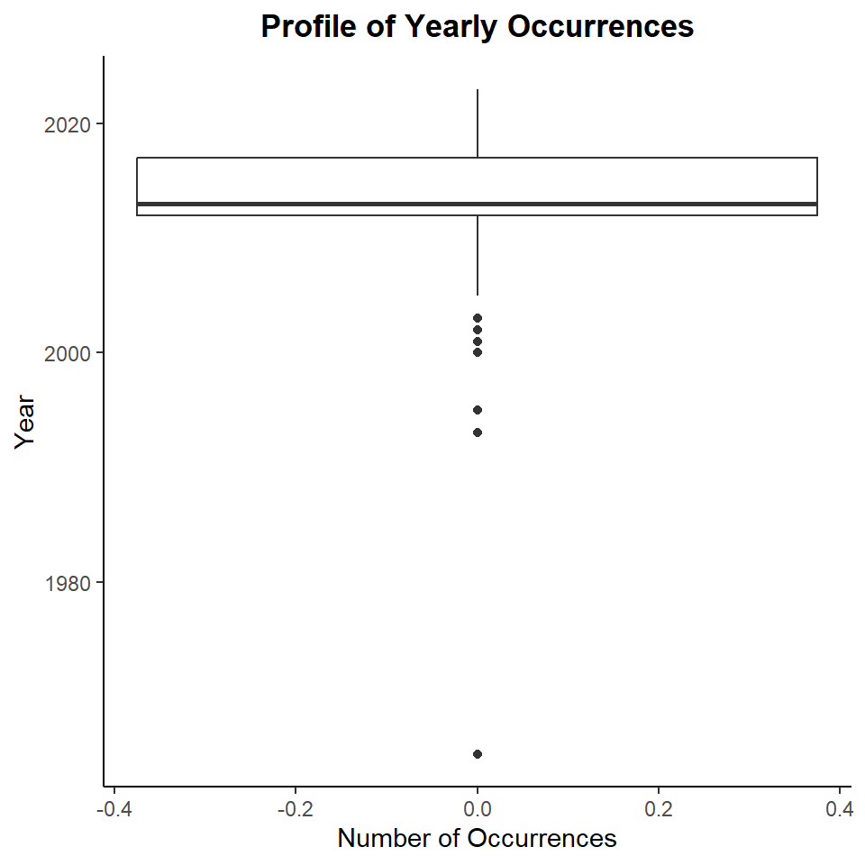
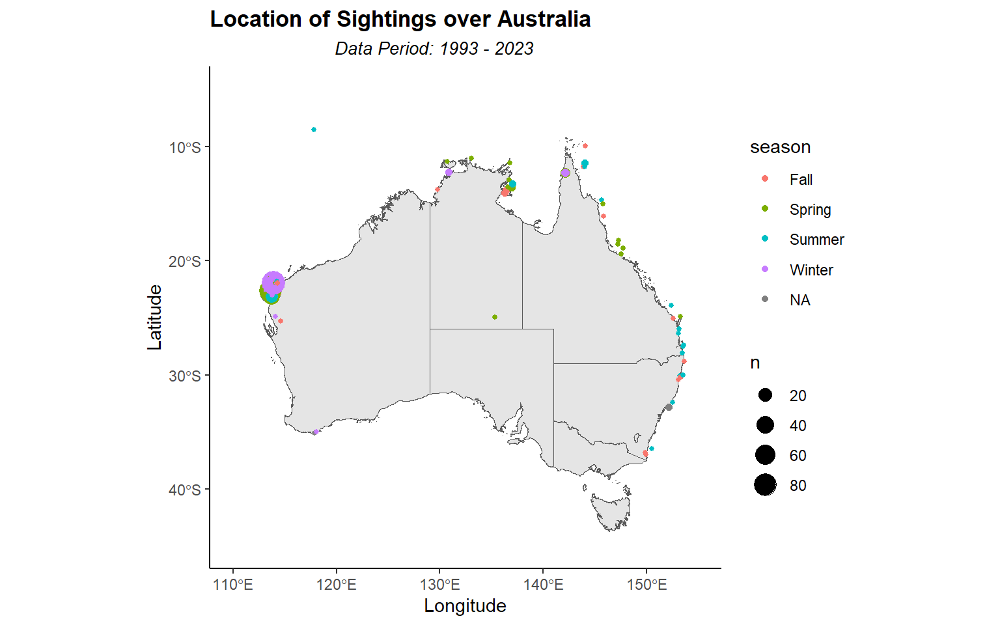
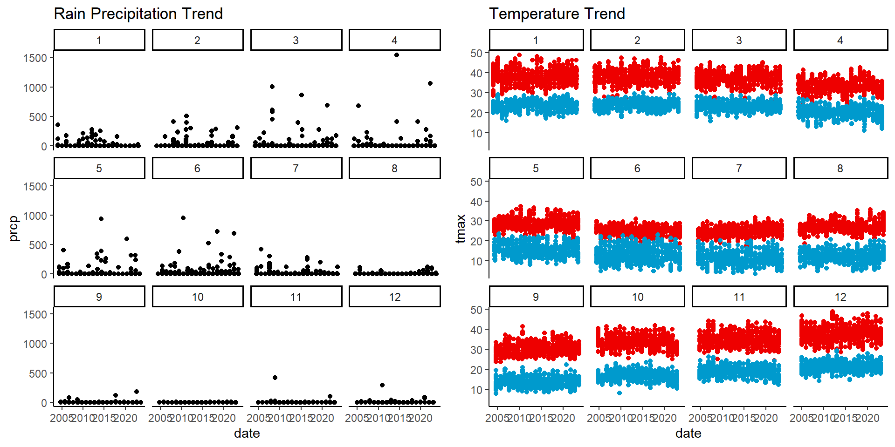

Whale Shark (Rhincodon typus) is the largest of all fishes alive. It may grow up to 18 metres (m) in length, but commonly seen between 4 m to 12 m. It is typically blue-grey or brownish in color with a pattern of white spots and vertical lines on its body. In terms of the diet, they feed on plankton, small crustaceans, squid, and fishes. The main feature of their food processing tools are their filtering screens on the gills and their tiny, more than 300 hooked teeth in both jaws. They are found on all the tropical oceans of the world where the water temperatures are ranging from 21 to 25 degrees Celsius and typically at depths of up to 1000 meters. Whale sharks are generally known to be active swimmers, and their activity can vary throughout the day and night. They do not exhibit diurnal (daytime) or seasonal (summer/winter) patterns of activity in the same way that some other species do. However, they seasonally come close to inshore areas, especially at plankton-rich locations. In Australia, it is found primarily in northern Western Australia, the Northern Territory, and Queensland. Whale sharks are known to migrate to the Ningaloo Marine park during specific times of the year, usually between March and July which is associated with the availability of plankton and other food sources in the area. During this time, there is usually a big ecotourism activity happening here for the chance to swim with them. Sadly, now, their status is an endangered species due to massive hunt of parts of their bodies. Hence, Conservation measures, including protections and regulations, are being implemented to safeguard this species in Australia and many other countries.
In this study, We expect to encounter these with our data analysis:
We expect to observe seasonal patterns in whale shark sightings, with higher occurrences during winter months.
We expect to see differences in the frequency of sightings between coastal areas and open ocean regions, indicating habitat preferences.
We expect to observe declining occurrences up to this year (2023).
We anticipate the sharks tend to move from east to west during fall and west to east during summer.
We expect to spot the most occurrences in the northern Western Australia.
Data description
Whale-shark Data
This dataset contains the information about the occurence of Whale Shark (Rhincodon Typus) in Australia at a certain time and place. The data is retrieved from the Atlas of Living Australia (ALA) Website. ALA is a collaborative, digital, open infrastructure that pulls together Australian biodiversity data from multiple sources, making it accessible and reusable.
# Extracting the occurence data from ALA Websitegalah_config(email ="egin0003@student.monash.edu")ws_raw <-galah_call() |>galah_identify("Rhincodon typus") |>atlas_occurrences()
Checking queue
Current queue size: 1 inqueue .
# Saving the raw datasave(ws_raw, file = here::here("data-raw/ws_raw.rda"))
The data is located in folder data-raw named as ws_raw.rda. It contains these variables:
Variables
Description
decimalLongitude
The geographic longitude (in decimal degrees) of the geographic center of a Location.
decimalLatitude
The geographic latitude (in decimal degrees) of the geographic center of a Location.
eventDate
The date-time or interval during which an Event occurred. For occurrences, this is the date-time when the event was recorded. Not suitable for a time in a geological context.
scientificName
The full scientific name, with authorship and date information if known. When forming part of an Identification, this should be the name in lowest level taxonomic rank that can be determined.
taxonConceptID
The ID in an external taxonomic database, like a sequence reference database for example.
recordID
The ID of the occurence.
dataResourceName
The name identifying the data set from which the record was derived.
occurenceStatus
A statement about the presence or absence of a Taxon at a Location.
# Extracting the assertion data from ALA Website ws_assert <-galah_call() |>galah_identify("Rhincodon typus") |>galah_select(group ="assertions") |>atlas_occurrences()
Checking queue
Current queue size: 1 inqueue .
# Saving the assertion datasave(ws_raw, file = here::here("data-raw/ws_assertion.rda"))# Extracting the event data from ALA Websitews_event <-galah_call() |>galah_identify("Rhincodon typus") |>galah_select(group ="event") |>atlas_occurrences()
Checking queue
Current queue size: 1 inqueue running
# Saving the event datasave(ws_raw, file = here::here("data-raw/ws_event.rda"))
Weather stations data
The dataset contains the information about Weather station locations which can be found in a Global Historical Climatology Network (GHCN) database maintained by the National Oceanic and Atmospheric Administration. This data is downloaded using the rnoaa package.
|id | An identifier associated with a specific location or station. |
|long | The longitude (in decimal degrees) of the location. |
|lat | The latitude (in decimal degrees) of the location. |
|elev | The elevation (in meters) of the location. |
|name | The name or description of the location or station. |
|wmo_id | The World Meteorological Organization (WMO) identifier associated with the location.|
|date | The date of the recorded weather data. |
|prcp | Precipitation amount. |
|tmax | Maximum temperature. |
|tmin | Minimum temperature. |
Initial data analysis (IDA)
Data Quality Check
General Check
There are 20 different data sources and upon referring their data collection method on atlas website, it is evident that all the sightings are wild sightings.
ws_event data has the samplingProtocol variable which basically indicates what type of sighting or data collection method was used. Most of the values are missing for this variable so it is also not a reliable method to identify wild sightings.
From ws_assert (assertion) data, we can refer to the BASIS_OF_RECORD_INVALID column, which provide information if the occurences are valid or invalid. Currently, there are 32 values recorded as TRUE indicating that they are invalid records. These invalid records will be removed to ensure the quality of the data.
Data Type Check
For the occurences dataset, we are going to perform some quality check, as mention below:
vis_dat(ws_raw)# Checking data types and replacing them with correct data typesws_raw <- ws_raw %>%mutate(decimalLatitude =as.numeric(decimalLatitude),decimalLongitude =as.numeric(decimalLongitude),eventDate =as.Date(eventDate) )
Figure 1: Checking Data Types
From the Figure 1 above, we can see: - The classes for all the variables in the ws_raw data set are correct except for eventDate which needs to be of Date type and only include dates. - There are a few missing values for decimalLatitude and decimalLongitude . We can also see that if decimalLatitude is missing, decimalLongitude is also missing and vice-versa. - There are 278 missing values in the eventDate variable out of 1281 records.
Outliers Check
Checking eventDate variables:
ws_raw %>%filter(!is.na(eventDate)) %>%ggplot(aes(y =year(eventDate))) +geom_boxplot() +ggtitle(label ="Profile of Yearly Occurences") +xlab("Number of Occurences") +ylab("Year") +theme_classic() +theme(plot.title =element_text(hjust =0.5, face ="bold"))

Figure 2: Profile of Yearly Occurences
Based on Figure 2: - There are only a few outlier years out of which the year below 1980 is farthest from the population. - There are 2 rows with record year less than 1990 which will be removed as they are not really reliable. - The other outliers might have some valid information since they follow natural order so we won’t be excluding them in clean data.
When plotting the locations of whale shark spotting, it is evident that some instances are from around the world and not just Australian waters.
Later we will filter the location to only include sightings around Australia only.
Finding nearest weather station
In analysing plotting the map, here we employ the usage of geospatial object of Australia, known as Geocentric Datum of Australia 2020 (GDA2020) that is provided by Australian Bureau of Statistics here. By using this, we are able to plot the map of Australia with separation line of Australian Federal State (e.g. Victoria, New South Wales, Queensland, Western Australia, etc.), which later help us identify the nearest weather station.
# Loading AU Mapstates <-read_sf(here::here('data/STE_2021_AUST_SHP_GDA2020/STE_2021_AUST_GDA2020.shp'))# Plotting All Weather Stationggplot() +geom_sf(data = states) +ylim(-45, -5) +xlim(110, 155) +geom_point(data = aus_stations, aes(x = longitude, y = latitude)) +theme_bw()
In the first plot we have plotted all weather station recently active in Australia.
In the second plot we have plotted the weather station (Learmonth airport) which is closest to the site with most occurrences of whale sharks. Since we already have the site with the highest occurrences that is the Ningaloo reef, we were able to find the weather station using this website.
Data Cleansing and Transforming
Whale Shark data
# Getting Invalid Recordws_assert <- ws_assert %>%select(recordID, BASIS_OF_RECORD_INVALID)# Joining Raw Occurence data to Assert data to filter out the invalid records# Performing further data cleansing & manipulatingwhale_shark <- ws_raw %>%left_join(ws_assert, by ="recordID") %>%#1281 rowsfilter(BASIS_OF_RECORD_INVALID ==FALSE, #1249 rowsis.na(eventDate) |year(eventDate) >1990, #1247 rowsis.na(decimalLatitude) ==FALSE) %>%#1241 rowsmutate(season =case_when(month(eventDate) %in%c(12, 1, 2) ~'Summer',month(eventDate) %in%c(3, 4, 5) ~'Fall',month(eventDate) %in%c(6, 7, 8) ~'Winter',month(eventDate) %in%c(9, 10, 11) ~'Spring',TRUE~NA))# Removing unnecessary columns from datawhale_shark <- whale_shark %>%select(-4, -5, -7, -8, -9)# Saving into RDA filesave(whale_shark, file ="data/whale_shark.rda")
In the code above, we have performed some steps of data cleansing, which include: - Join the occurence data to assertion data by recordID variable. - Taking the BASIS_OF_RECORD_INVALID into the occurence data and filter out the invalid records by setting the variable value into “False”. - Filter out the occurences that happened before 1990 as they are unreliable. - Filter out the occurences that has missing value in decimalLatitude. - Add 2 new column as identifier. First column location, is an identifier for location when the whale sharks are spotted in the open ocean or coastal area based on decimalLatitude and decimalLongitude. Second column season, is a identifier for season (e.g. Summer, Fall, Winter, and Spring). These two columns are needed to perform the plot for our expectations.
Weather Data Filtering out the variables that we won’t need for our analysis using select query.
whale_shark_weather <- whale_shark %>%# Filter occurrence to near learmonth weather stationfilter(decimalLatitude <-20, decimalLatitude >-24, decimalLongitude >112, decimalLongitude <115) %>%left_join(narrogin_v2, by =c("eventDate"="date")) %>%mutate(sighting =ifelse(is.na(tmin) &is.na(tmax), 0, 1))# Saving into RDA filesave(whale_shark_weather, file ="data/whale_shark_weather.rda")
Why labeling days when sighting occurs is necessary?
So, we’re trying to figure out how weather conditions relate to wildlife sightings, specifically with whale sharks. We’ve got two main datasets: one with daily weather data from NOAA weather stations, and another with records of when and where whale shark sightings occurred.
Weather data is collected every day, like clockwork, but whale shark sightings don’t happen every day. So, to connect the dots and see how weather affects sightings, we need a way to match up the weather conditions with whether a sighting happened on that day.
That’s where this “sighting occurred” or “didn’t occur” label comes in. Basically, we’re creating a new variable that says “1” if there was a whale shark sighting on a particular day and “0” if there wasn’t.
This is all about making our data analysis easier. With these labels, we can do things like calculate correlations between weather factors (precipitation, temperature) and sightings. We can test hypotheses like, “Do sightings increase when there are higher chances of rain?” or “Are sightings more likely in certain temperature ranges?”
Plus, when we visualise the data, it’s much clearer. We can make time series plots that show how weather conditions and sightings line up over time. And if we want to build models that predict when whale sharks might appear based on weather forecasts, these labels are essential.
Exploratory Data Analysis (EDA)
Expectation 1: We expect to observe seasonal patterns in whale shark sightings, with higher occurrences during winter months. The Figure 5 below depict the number of occurence for every season from 1993 until 2023.
whale_shark %>%filter(is.na(eventDate) ==FALSE) %>%group_by(season) %>%summarise(count =n()) %>%ggplot(aes(x =fct_reorder(season, -count), y = count)) +geom_bar(stat ="identity", position ="dodge", fill ="skyblue") +geom_text(aes(label = count, x = season, y = count),position =position_dodge(width =0.9),vjust =1.5,hjust =0.5,size =4) +ggtitle(label ="Number of Occurences per Season",subtitle ="Data Period: 1993 - 2023") +xlab("Season") +ylab("Count of Occurences") +theme_classic() +theme(plot.title =element_text(hjust=0.5, face ="bold"),plot.subtitle =element_text(hjust=0.5, face ="italic", size =10))
Figure 5: Number of Occurences per Season
Based on the plot above, it seems that winter indeed had a substantial number of sightings (319), which kind of align with our expectation. Spring had a slightly higher number of sightings (322) than winter, but even though this contradicts with our initial expectation, it is important to note that the difference between spring and winter is relatively small. The other two season, Fall and Summer, clearly have less occurences with 258 and 98 sightings respectively.
Although our initial expectation was to observe higher occurrences during the winter months, the data shows that sightings were relatively evenly distributed between spring and winter, with spring has slightly more occurences. Additionally, fall had a significant number of sightings, while summer had the fewest.
Expectation 2: We expect to see differences in the frequency of sightings between coastal areas and open ocean regions, indicating habitat preferences.
For this expectation, we use 2 geospatial objects about territorial sea boundary and exclusive economic zone of Australia. These maps have been derived from Geoscience Australia’s Australian Maritime Boundaries (AMB) version 2.0 data which is a digital representation of Australia’s territorial sea baseline and the maritime limits and boundaries as established under the Sea and Submerged Lands Act 1973. The map describes the different maritime zones, explains how Australia defines and updates its maritime boundaries, and lists the different maritime boundary arrangements with Indonesia, Papua New Guinea, Solomon Islands, France (New Calendonia and Kerguelen) and New Zealand. Their gdb file can be found here. Since our expectation requires coastline and open ocean region for Australia, we have used these boundary files.
# Checking Layers of the GDB file to figure out which files we require for our boundaries.st_layers("data/Maritime_Boundaries_Database/Seas and Submerged Lands Act 1973/Seas and Submerged Lands Act 1973.gdb")
Driver: OpenFileGDB
Available layers:
layer_name
1 Contiguous_Zone_AMB2014a_Limit
2 Contiguous_Zone_AMB2014a_Area
3 Continental_Shelf_AMB2014a_Limit
4 Continental_Shelf_AMB2014a_Points
5 Exclusive_Economic_Zone_Amended_By_Perth_Treaty_1997_AMB2014a_Limit
6 Exclusive_Economic_Zone_Amended_By_Perth_Treaty_1997_AMB2014a_Area
7 Exclusive_Economic_Zone_AMB2014a_Limit
8 Exclusive_Economic_Zone_AMB2014a_Area
9 Normal_Baselines_AMB2014a_Limit
10 Straight_Baselines_AMB2014a_Limit
11 Territorial_Sea_AMB2014a_Limit
12 Territorial_Sea_AMB2014a_Area
13 Normal_Baselines_AMB2014a_Points
geometry_type features fields crs_name
1 Multi Line String 6670 16 GDA94
2 Multi Polygon 23 17 GDA94
3 Multi Line String 13 16 GDA94
4 Point 31536 22 GDA94
5 Multi Line String 11 16 GDA94
6 Multi Polygon 9 17 GDA94
7 Multi Line String 13 16 GDA94
8 Multi Polygon 9 18 GDA94
9 Multi Line String 30497 18 GDA94
10 Multi Line String 1183 16 GDA94
11 Multi Line String 12120 16 GDA94
12 Multi Polygon 46 17 GDA94
13 Point 2638 17 GDA94
open_ocean_boundary <-st_read("data/Maritime_Boundaries_Database/Seas and Submerged Lands Act 1973/Seas and Submerged Lands Act 1973.gdb",layer ="Exclusive_Economic_Zone_AMB2014a_Area" )
Reading layer `Exclusive_Economic_Zone_AMB2014a_Area' from data source
`C:\Users\evang\Documents\Monash University\Semester 2\ETC5521\Assignment\Assignment 3\assignment-3-amica\data\Maritime_Boundaries_Database\Seas and Submerged Lands Act 1973\Seas and Submerged Lands Act 1973.gdb'
using driver `OpenFileGDB'
Simple feature collection with 9 features and 18 fields
Geometry type: MULTIPOLYGON
Dimension: XY
Bounding box: xmin: 40.85432 ymin: -69.536 xmax: 171.8011 ymax: -8.473407
Geodetic CRS: GDA94
coastal_boundary <-st_read("data/Maritime_Boundaries_Database/Seas and Submerged Lands Act 1973/Seas and Submerged Lands Act 1973.gdb",layer ="Territorial_Sea_AMB2014a_Area" )
Reading layer `Territorial_Sea_AMB2014a_Area' from data source
`C:\Users\evang\Documents\Monash University\Semester 2\ETC5521\Assignment\Assignment 3\assignment-3-amica\data\Maritime_Boundaries_Database\Seas and Submerged Lands Act 1973\Seas and Submerged Lands Act 1973.gdb'
using driver `OpenFileGDB'
Simple feature collection with 46 features and 17 fields
Geometry type: MULTIPOLYGON
Dimension: XY
Bounding box: xmin: 44.91163 ymin: -69.81044 xmax: 168.2262 ymax: -9.088012
Geodetic CRS: GDA94
As we can see from the map above, there are very few observations in the open ocean area and majority of the wild sightings have been in the coastal area indicated by red dots.
Since the Geoscience Australia considers coastal waters different from territorial sea(coastal boundary), some of the points which are in the coastal waters are excluded from the plot. Also, shape file for coastal waters is not available which doesn’t allow us to plot them on the map.
So, we can say that our expectation has been met and the chances that whale sharks appear in the coastal area is higher than the open ocean region of Australia.
Expectation 3: We expect to observe declining occurrences up to this year (2023).
whale_shark %>%na.omit() %>%group_by(Year =year(eventDate)) %>%summarise(Sightings =n_distinct(recordID)) %>%ggplot(aes(x = Year, y = Sightings)) +geom_line(size =1, color ="skyblue") +geom_point(size =3, color ="navy") +geom_text(aes(label =ifelse( Sightings >150,paste("Year: ", Year, "\nSharks: ",as.character(Sightings)),"" )),hjust =0, vjust =1) +ggtitle(label ="Whale Shark Sightings per Year",subtitle ="Data Period: 1993 - 2023") +xlab("Year") +ylab("Observations") +theme_classic() +theme(plot.title =element_text(hjust=0.5, face ="bold"),plot.subtitle =element_text(hjust=0.5, face ="italic", size =10))
Figure 7: Whale Shark sightings every year
The plot suggests that there was a notable increase in whale shark sightings from around 2008 to 2013, with the highest number of sightings occurring in 2013. This period might represent a peak in whale shark observations.
After the peak, there is a decline in sightings, but the decline stabilizes after 2017. The number of sightings remains relatively consistent from 2018 to 2023, without a clear trend of continuous decline.
While there may be fluctuations in the number of sightings from year to year, the data does not show a significant decline in occurrences up to the year 2023. It suggests that the population of whale sharks in the observed area may have stabilized or reached a plateau, at least within the scope of the available data.
Note that this interpretation is based on the available data and the assumption that the observations are representative of the entire whale shark population in the area. Factors such as changes in survey effort or environmental conditions may also influence the observed trends.
The expectation is not met according to the data.
Expectation 4: We anticipate the sharks tend to move from east to west during fall and west to east during summer.
whale_shark %>%na.omit() %>%mutate(Direction =ifelse(decimalLongitude <134, "West", "East")) %>%group_by(season, Direction, year(eventDate)) %>%summarise(sum =n_distinct(recordID)) %>%ggplot(aes(x = season, y = sum)) +geom_col() +facet_grid( ~ Direction) +coord_flip() +ggtitle(label ="Sightings Eastern Part v/s Western Part season wise",subtitle ="Data Period: 1993 - 2023") +xlab("Seasons") +ylab("Sightings") +theme_classic() +theme(plot.title =element_text(hjust=0.5, face ="bold"),plot.subtitle =element_text(hjust=0.5, face ="italic", size =10))
Figure 8: Sightings East v/s West season wise
Whale sharks generally prefer Western Australian waters more than Eastern waters.
They also prefer winter months over summer months in West whereas other way round in the East.
This might suggest (if we get more data about the sharks in east), Sharks travel from west to east to enjoy summer months in east and east to west to enjoy winter months in west.
Note: Here, 134 degrees longitude is used as reference line to separate the East from West since it equally divides the continents in two halves.
Expectation 5: We expect to spot the most occurrences in the northern Western Australia.
The figure Figure 9 below shows the sightings of whale shark.
# Plotting the Mapggplot() +geom_sf(data = states) +ylim(-45, -5) +xlim(110, 155) +geom_count(data = whale_shark, aes(x = decimalLongitude, y = decimalLatitude, color = season)) +ggtitle(label ="Location of Sightings over Australia",subtitle ="Data Period: 1993 - 2023") +xlab("Longitude") +ylab("Latitude") +theme_classic() +theme(plot.title =element_text(face ="bold"),plot.subtitle =element_text(hjust=0.4, face ="italic", size =10))

Figure 9: Locations of Where Sightings are Recorded
As can be seen from the map plot above, the sightings are spread out accross western, northern, and eastern part of Australia. We added another dimension, a size, that make some of the occurence have bigger circle (like a bubble). This is needed because from the dataset, we identified there are so many location that have exact latitude & longitude, which will overlapping each other if we only show it as dot points, and hinder the underlying value of the plot. With this additional dimension, it is clear that most of the occurences are recorded in the northern of Western Australia area.
In contrast, we can see that the number of occurences are very small in the southern part of Australia. Right now, we can only assume that Whale Shark may not prefer this area due to it is closer to the south pole, which make the sea water temperature colder compare to the other area. Unfortunately, we could not find any dataset regarding the sea water temperature that can be downloaded and plotted according to the time when the sightings happened. Otherwise, it will provide deeper understanding of whale shark behaviour.
As we have explained so far, we can conclude that our expectation is satisfied with the fact that most of occurences happened in the northern part of Western Australia. This is align with the information that we gathered from different sources, which says whale shark usually migrate to Ningaloo Marine Park that is located in the northern Western Australia. On the other hand, the high number of occurences could also supported by the fact that there are eco-tourism around that area, meaning more people will be around that area (on certain season) and record the sightings.
Whale Sharks Spotted Near Learmonth Weather Station
ggplot() +geom_sf(data = states) +ylim(-23.5, -21) +xlim(112.5, 115.5) +geom_count(data = whale_shark_weather, aes(x = decimalLongitude, y = decimalLatitude, color = season)) +geom_point(data = (aus_stations %>%filter(name =="learmonth airport")), aes(x = longitude, y = latitude, label = name)) +geom_label(data = (aus_stations %>%filter(name =="learmonth airport")), aes(label = name, x = longitude, y = latitude),position =position_dodge(width =0.9),vjust =0.5,hjust =-0.05,size =4) +ggtitle(label ="Location of Sightings near Learmonth Airport Weather Station",subtitle ="Data Period: 1993 - 2023") +xlab("Longitude") +ylab("Latitude") +theme_classic() +theme(plot.title =element_text(hjust=0.4, face ="bold"),plot.subtitle =element_text(hjust=0.4, face ="italic", size =10))
Figure 10: Locations of Where Sightings are Recorded Near Learmonth Airport Weather Station
We plotted a map that shows the distribution of whale shark sightings surrounding the location of Learmonth Airport. The color of the points represents different seasons when the sightings occurred while the size of the points represent the number of sightings at a particular location. According to the plot, we can note that the most occurrences are in the spring season as they and they are also spread out across the coast. Next, highest occurrences are during winter season and then summer followed by fall. During winter, they appear towards north of the weather station and during summer they appear in south.
Finding relation between Temperature and sightings
Profiling the Weather Prior to performing the analysis for the correlation of sightings and weather, we would like to profile the weather condition around the learmonth aiport first. This will help us to get the preliminary understanding of how the condition around the area, which we will take as our ammunition to enhance the interpretation of our analysis.
# Adding a new variable of average temperaturewhale_shark_weather <- whale_shark_weather %>%mutate(avg_temp = (tmax + tmin) /2)# Plot Rain Precipitation Distributionp1 <-ggplot(narrogin_v2, aes(x = prcp)) +geom_boxplot() +ggtitle(label ="Rain Precipitation Distribution") +theme_classic()# Plot Max Temperature Distribution p2 <-ggplot(narrogin_v2, aes(x = tmax)) +geom_boxplot() +ggtitle(label ="Max Temperature Distribution") +theme_classic()# Plot Min Temperature Distribution p3 <-ggplot(narrogin_v2, aes(x = tmin)) +geom_boxplot() +ggtitle(label ="Min Temperature Distribution") +theme_classic()
Figure 11: Weather Distribution
Let’s breakdown the distribution of each weather related variables from Figure 11. In terms of rain precipitation, it looks like the area around Learmonth Airport is mostly dry, concluded by the zero (0) precipitation throughout the year with raining happened occasionally. On the other hand, these area experienced a high variance of temperature, as can be seen, the minimum temperature was 3.5 degree celcius and maximum temperature was 48.9 degree celcius. The next paragraph will cover the profile of the weather based on their trend over the time.

Figure 12: Weather Trend
Now, we will assess the trend of rain precipitation and temperature. From figure Figure 12, the most interesting insight from this plot is the fact that the rain starting to pour in this area more frequently from January, it continues to increase into months to come until it started to decrease from July. The rest of the year, the rain happened occasionally. Please be mindful that what we meant is not the heavyness of the rain, rather the frequency of rain pouring over the time, we assume that precipitation of more than 0 means raining. As for the temperature, it is basically a common knowledge that summer is the hottest, winter is the coldest, fall and spring are in between the prior categories, which clearly showed by the plot.
Through this weather profiling, we have got a new perspective that will help us provide better interpretation of the correlation analysis. It allows us to think why would under certain condition the sightings are more frequent. In the next section, we will incorporate this information to the actual sightings of the whale shark, and uncover the insight of whale shark behaviour.
Whale Shark Sightings vs Temperature We will start the analysis by unveiling the relationship between whale shark sightings against the average temperature. In the Figure 13 below, we grouped the observations based on the season to provide better visualisation and level of detail.
whale_shark_weather %>%filter(sighting ==1) %>%group_by(eventDate, season) %>%summarise(sightings =sum(sighting),avg_temp =mean(avg_temp)) %>%ggplot(aes(x = sightings, y = avg_temp, color = season)) +geom_point() +facet_wrap(~ season) +ggtitle(label ="Correlation of Sightings to Average Temperature",subtitle ="Around Learmonth Airport Weather Station") +xlab("Sightings") +ylab("Average Temperature (Celcius)") +theme_classic() +theme(plot.title =element_text(hjust=0.5, face ="bold"),plot.subtitle =element_text(hjust=0.5, face ="italic", size =10))
Figure 13: Sightings to Avg. Temperature
Based on the plot above, there appears to be no significant pattern or dependency between temperature and the occurence of whale shark sightings. Unlike some species that may exhibit preferences for specific temperature ranges, whale shark, in this dataset, seem to defy such temperature-related constrains. This lack of a clear correlation between temperature and sightings suggests that whale sharks may possess a wide temperature tolerance or have a migratory behavior that is not closely tied to local temperature variations.
Another think that worth noting is the temperature in this dataset is actually an air temperature, which may be totally different with the sea water temperature where whale shark is spotted. So, there might be a case when the air temperature is hot, the sea water temperature is mild and vice versa. Also, the depth of sightings should be considered as well, since deeper sea level may have colder temperature.
Further analysis migh be required by utilising sea water temperature to provide a deeper understanding of the whale shark behaviour. As of now, there is no substantial pattern we can see to conclude the correlation between the air temperature surface to the whale shark sightings.
Whale Shark Sightings vs Rain Precipitation The next analysis will be the correlation analysis between sightings and rain precipitation. As known previously that the area is mostly dry, so this might be affecting the sightings as well. The plot will be similar as the previous analysis, where we grouped the observations based on the season to provide better visualisation and level of detail.
whale_shark_weather %>%filter(sighting ==1) %>%group_by(eventDate, season) %>%summarise(sightings =sum(sighting),prcp =mean(prcp)) %>%ggplot(aes(x = sightings, y = prcp, color = season)) +geom_point() +facet_wrap(~ season) +ggtitle(label ="Correlation of Sightings to Rain Precipitation",subtitle ="Around Learmonth Airport Weather Station") +xlab("Sightings") +ylab("Rain Precipitation") +theme_classic() +theme(plot.title =element_text(hjust=0.5, face ="bold"),plot.subtitle =element_text(hjust=0.5, face ="italic", size =10))
Figure 14: Sightings to Rain Precipitation
As can be seen from the Figure 14, predominantly all sightings occur in when there is not raining, while we can still see that whale shark was also spotted when it is raining. However, we tought there might be an underlying factor that could reveal the reason why whale shark spotted more in this area, particularly to the correlation with rain precipitation. If we recall our analysis from figure Figure 5, we know that whale shark are spotted mostly in Winter and Spring season. Additionally, if we consider our insight from weather data profiling of figure Figure 12, we know that the rain started to pour in this area from January, it consistently happen each month until July. So, from these two insights, there is a chain reaction that might lead to whale shark migrate into this area. After doing some research, we have got the information that a rainfall is actually have an indirect impact into sea ecosystem. When raining pour down, it can lead to increased runoff from land into rivers and eventually into the sea. This runoff can carry nutrients that promotes the growth of plankton, which in turn can be consumed by other creatures in the sea such as fish, crustacean, squid, etc. In the end, a big fish such as whale sharks are getting the benefit as well since those are their primary food.
So, as mentioned in the first point, the rain may not be affect the occurence of whale shark directly in certain area, but the chain reaction of frequent raining in that area may lead to changes in the sea ecosystem, which benefitting whale shark. Hence, we conclude that there is still a indirect correlation between raining and whale shark sightings.
Summary
References
Department of Fisheries, Government of Western Australia. (2011, September). Fisheries Fact Sheet: Whale Shark. https://www.fish.wa.gov.au/documents/recreational_fishing/fact_sheets/fact_sheet_whale_shark.pdf
Australian Bureau of Statistics. (2021, July). Digital Boundary Files. https://www.abs.gov.au/statistics/standards/australian-statistical-geography-standard-asgs-edition-3/jul2021-jun2026/access-and-downloads/digital-boundary-files
Bowie, A. (n.d.). Best time to visit Ningaloo Reef. Honeymoon Guide. Retrieved October 5, 2023, from https://www.honeymoonguide.com.au/australia/ningaloo-reef-weather.html#:~:text=Note%3A%20Meteorological%20data%20for%20the%20Ningaloo%20Coast%20is
The following are the R-packages used in this blog-post:
tidyverse: Wickham H, Averick M, Bryan J, Chang W, McGowan LD, François R, Grolemund G, Hayes A, Henry L, Hester J, Kuhn M, Pedersen TL, Miller E, Bache SM, Müller K, Ooms J, Robinson D, Seidel DP, Spinu V, Takahashi K, Vaughan D, Wilke C, Woo K, Yutani H (2019). “Welcome to the tidyverse.” Journal of Open Source Software, 4(43), 1686. doi:10.21105/joss.01686 https://doi.org/10.21105/joss.01686.
dplyr: Wickham H, François R, Henry L, Müller K, Vaughan D (2023). dplyr: A Grammar of Data Manipulation. R package version 1.1.1, https://CRAN.R-project.org/package=dplyr.
ggplot2: H. Wickham. ggplot2: Elegant Graphics for Data Analysis. Springer-Verlag New York, 2016.
sf: Pebesma, E., & Bivand, R. (2023). Spatial Data Science: With Applications in R. Chapman and Hall/CRC. https://doi.org/10.1201/9780429459016
galah: Westgate M, Kellie D, Stevenson M, Newman P (2023). galah: Biodiversity Data from the Living Atlas Community. R package version 1.5.3, https://CRAN.R-project.org/package=galah.
leaflet: Cheng J, Schloerke B, Karambelkar B, Xie Y (2023). leaflet: Create Interactive Web Maps with the JavaScript ‘Leaflet’ Library. R package version 2.2.0, https://CRAN.R-project.org/package=leaflet.